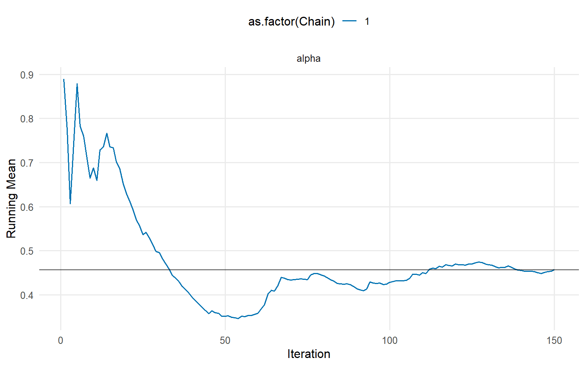
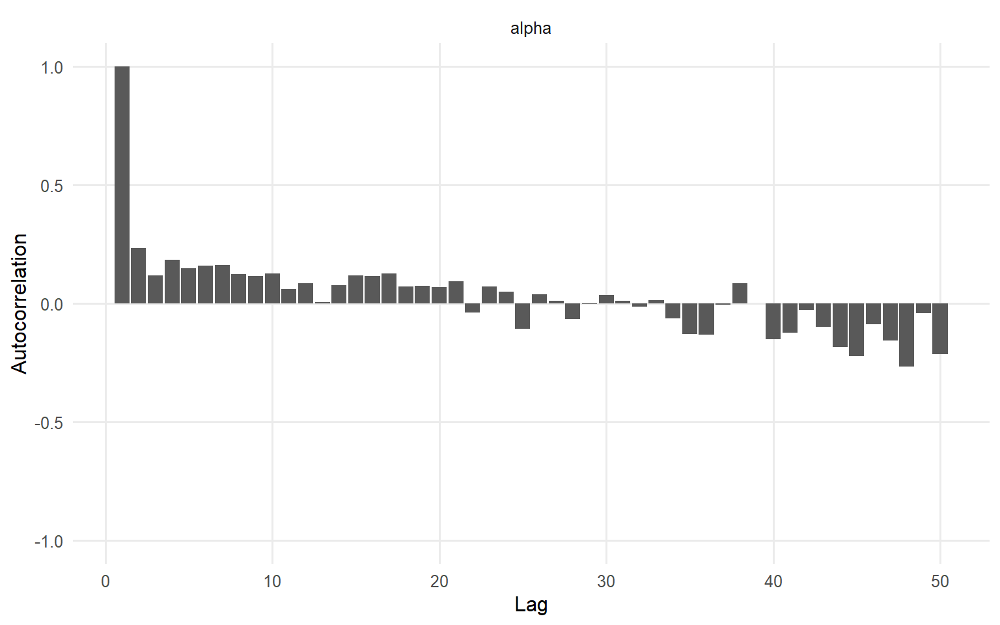

Code
# Load packaged data
data("nc_pos200_k3")
y <- nc_pos200_k3$y
# Direct call
bundle_direct <- bundle(
y = y,
kernel = "gamma",
backend = "crp",
GPD = FALSE,
components = 5,
mcmc = mcmc
)Website workflow note. This page reflects the current exported API and recommended wrapper-first usage. Last updated: 2026-02-19.
For the full package narrative, see the main package vignettes (basic, unconditional, conditional, and causal).
CausalMixGPD supports a wrapper-first workflow for most users:
dpmix() or dpmgpd().summary(), plot(), and predict().The lower-level bundle route (bundle() then mcmc()) remains available for advanced control.
Purpose: Generate NIMBLE model code, compile sampler, prepare for MCMC execution.
For the underlying model math (GPD threshold exceedances, DPM bulk regression, and the spliced quantile construction), see Theory: GPD tails + DPM bulk + splicing.
# Load packaged data
data("nc_pos200_k3")
y <- nc_pos200_k3$y
# Direct call
bundle_direct <- bundle(
y = y,
kernel = "gamma",
backend = "crp",
GPD = FALSE,
components = 5,
mcmc = mcmc
)# Bundle is an S3 object with structure
bundle_class <- class(bundle_direct)
bundle_names <- names(bundle_direct)
bundle_mcmc <- bundle_direct$mcmc_settings
bundle_class[1] "causalmixgpd_bundle"bundle_names [1] "spec" "code" "constants" "dimensions"
[5] "data" "inits" "monitors" "monitor_policy"
[9] "mcmc" "epsilon" bundle_mcmcNULLPurpose: Run posterior sampling from the compiled bundle.
# Run MCMC
fit <- load_or_fit("quickstart-basic-model-compile-run-fit", dpmix(bundle_direct, mcmc = list(show_progress = FALSE)))
invisible(fit)summary(fit)MixGPD summary | backend: Chinese Restaurant Process | kernel: Gamma Distribution | GPD tail: FALSE | epsilon: 0.025
n = 200 | components = 5
Summary
Initial components: 5 | Components after truncation: 2
WAIC: 946.601
lppd: -425.102 | pWAIC: 48.198
Summary table
parameter mean sd q0.025 q0.500 q0.975
weights[1] 0.686 0.11 0.464 0.698 0.891
weights[2] 0.281 0.096 0.093 0.275 0.461
alpha 0.518 0.34 0.069 0.44 1.364
shape[1] 1.574 0.25 1.281 1.525 2.23
shape[2] 1.549 0.252 1.009 1.547 2.033
scale[1] 0.295 0.061 0.232 0.285 0.427
scale[2] 1.232 0.47 0.437 1.166 2.333# Posterior mean parameters in original form
params_fit <- params(fit)
params_fitPosterior mean parameters
$alpha
[1] 0.5175
$w
[1] 0.6862 0.2813
$shape
[1] 1.574 1.549
$scale
[1] 0.2955 1.2320# Trace plots
plot(fit, params = "alpha|beta", family = c("traceplot", "running", "autocorrelation"))
=== traceplot ===
=== running ===
=== autocorrelation ===
# Load packaged data
data("nc_pos200_k3")
y_data <- nc_pos200_k3$y
# PHASE 1: Bundle
bundle_final <- bundle(
y = y_data,
kernel = "gamma",
backend = "crp",
GPD = FALSE,
components = 5,
mcmc = mcmc
)
# PHASE 2: MCMC
fit_final <- load_or_fit("quickstart-basic-model-compile-run-fit_final", dpmix(bundle_final, mcmc = list(show_progress = FALSE)))
summary(fit_final)MixGPD summary | backend: Chinese Restaurant Process | kernel: Gamma Distribution | GPD tail: FALSE | epsilon: 0.025
n = 200 | components = 5
Summary
Initial components: 5 | Components after truncation: 2
WAIC: 920.54
lppd: -398.762 | pWAIC: 61.508
Summary table
parameter mean sd q0.025 q0.500 q0.975
weights[1] 0.595 0.098 0.464 0.58 0.831
weights[2] 0.359 0.101 0.126 0.372 0.496
alpha 0.557 0.335 0.088 0.508 1.431
shape[1] 1.892 0.478 1.363 1.822 3.247
shape[2] 2.241 0.792 1.291 1.914 3.779
scale[1] 0.579 0.306 0.27 0.383 1.258
scale[2] 0.938 0.625 0.278 0.934 1.974# Chinese Restaurant Process
bundle_crp <- bundle(
y = y_data,
kernel = "gamma",
backend = "crp",
components = 5,
mcmc = mcmc
)
fit_crp <- load_or_fit("quickstart-basic-model-compile-run-fit_crp", dpmix(bundle_crp, mcmc = list(show_progress = FALSE)))
invisible(fit_crp)# Stick-Breaking Process
bundle_sb <- bundle(
y = y_data,
kernel = "gamma",
backend = "sb",
components = 5,
mcmc = mcmc
)
fit_sb <- load_or_fit("quickstart-basic-model-compile-run-fit_sb", dpmix(bundle_sb, mcmc = list(show_progress = FALSE)))
invisible(fit_sb)kernels_available <- c("gamma", "lognormal", "normal", "laplace", "invgauss", "amoroso", "cauchy")
kernels_available[1] "gamma" "lognormal" "normal" "laplace" "invgauss" "amoroso"
[7] "cauchy" # Data with tail behavior
data("nc_pos_tail200_k4")
y_tail <- nc_pos_tail200_k4$y
# Build with GPD
bundle_gpd <- bundle(
y = y_tail,
kernel = "gamma",
backend = "sb",
GPD = TRUE,
components = 6,
mcmc = mcmc
)
fit_gpd <- load_or_fit("quickstart-basic-model-compile-run-fit_gpd", dpmgpd(bundle_gpd, mcmc = list(show_progress = FALSE)))
summary(fit_gpd)MixGPD summary | backend: Stick-Breaking Process | kernel: Gamma Distribution | GPD tail: TRUE | epsilon: 0.025
n = 200 | components = 6
Summary
Initial components: 6 | Components after truncation: 2
Summary table
parameter mean sd q0.025 q0.500 q0.975
weights[1] 0.59 0.075 0.463 0.572 0.734
weights[2] 0.314 0.07 0.205 0.28 0.444
alpha 0.952 0.821 0.175 0.615 2.981
tail_scale 1.763 0.355 1.136 1.747 2.458
tail_shape 0.215 0.117 -0.006 0.202 0.457
threshold 2.934 0.371 2.101 2.944 3.762
shape[1] 5.105 1.01 2.76 5.128 7.097
shape[2] 2.621 1.234 1.311 2.41 6.855
scale[1] 0.292 0.217 0.165 0.234 1.143
scale[2] 2.191 1.139 0.151 1.988 4.898| Phase | Function | Input | Output |
|---|---|---|---|
| 1. Fit (bulk only) | dpmix() |
y, X (optional), kernel, backend, components, mcmc | mixgpd_fit |
| 2. Fit (bulk + tail) | dpmgpd() |
y, X (optional), kernel, backend, components, mcmc | mixgpd_fit |
recommended_mcmc <- data.frame(
profile = c("Quick test", "Standard", "Production"),
niter = c(500, 1000, 1000),
nburnin = c(100, 250, 250),
nchains = c(1, 2, 3)
)
recommended_mcmc profile niter nburnin nchains
1 Quick test 500 100 1
2 Standard 1000 250 2
3 Production 1000 250 3